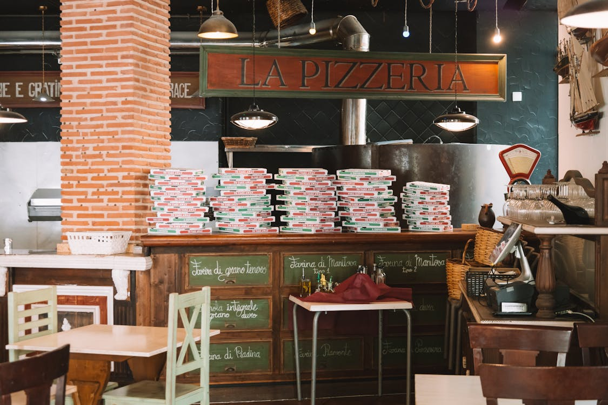

Sobre Nós

Fundada em 2010, a Pizzaria Sabor da Vila nasceu com o propósito de levar sabor, qualidade e carinho para cada cliente. Utilizamos ingredientes frescos e selecionados, combinando tradição italiana com um toque especial da nossa equipe.